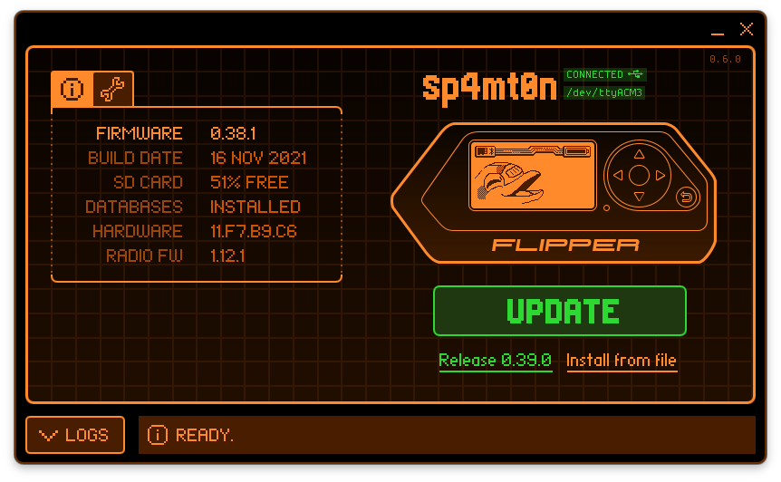

Flipper Zero / GitHub Docs Hub
先走主线，再进专题，再回仓库查细节。
把课程、主知识库、专题文档收成一条清晰入口。
这个首页只保留真正需要的入口，不再堆叠装饰动画。中文课程负责顺序学习，主知识库负责总览，qFlipper 和专题文档负责桌面端与细分主题，新增 Markdown 文档也统一收口。
qFlipper Workspace
desktop / official

桌面端工作流放在主视觉里，不再拆成三层重复卡片。
更新、备份、CLI、投屏和官方资产都围绕这条桌面链路展开，首页只给一个清楚的入口，不再把同一主题重复讲三遍。
从课程开始
CN Guide
02
11 章顺序主线，先把设备、协议、开发和工具链走完整。
回到主知识库
Master
03
总览整个仓库的结构，再按专题深入，不必在目录里反复翻找。
进入专题文档
Topics
qFlipper、官方精读、App 合集和 RAG 索引都从这里分流。
Docs Hub
首页不再硬铺卡片，文档按职责分组。
主线课程负责顺序学习，核心文档负责总览和专题，索引文件负责查全，英文入口单独保留。新增 Markdown 现在有固定位置，不再被首页样式淹没。
主线课程
课程页只承担顺序学习，不和专题文档混排。
核心文档
先看结构，再看专题。
专题集合
把新增 Markdown 固定收进首页。
索引与清单
查全、核对和追踪整理进度。
English
英文入口不再藏在搜索结果里。
References
官方入口和社区入口放在同一层，但角色分开。
官方入口负责稳定基线，社区入口负责补充样例和发现层。首页只保留高信号入口，不再把所有资源都做成同一种卡片。